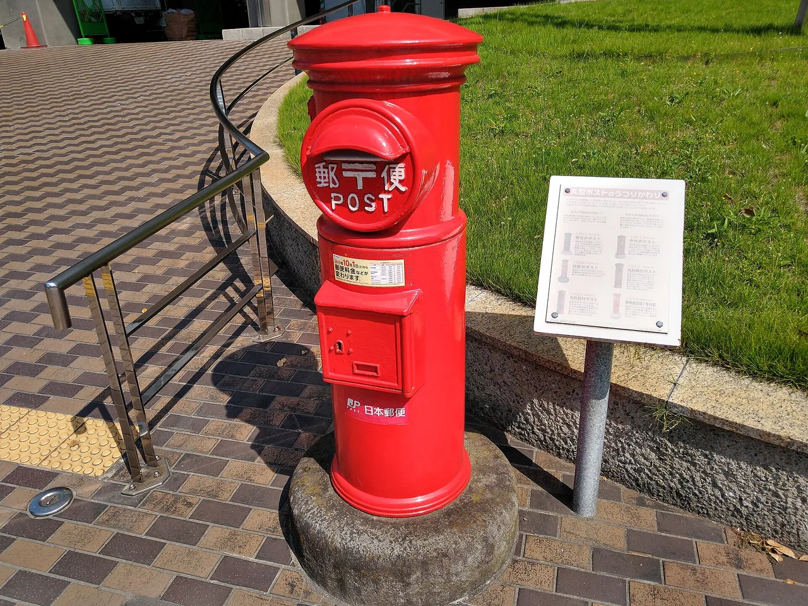

How to buy from Japan: proxy services compared
A lot of the best things in Japan never make it abroad — limited anime figures, single Pokémon cards on Mercari, doujin works, town-exclusive merch, used study books. Japanese shops and marketplaces also rarely ship overseas or accept foreign cards. A proxy buying service solves both: it buys the item for you inside Japan, then forwards it worldwide. Here's how it works and how the main services compare.

What a proxy service actually does
- You find an item on a Japanese site — Mercari, Yahoo! Auctions/Flea Market, Rakuten, Amazon Japan, or a specialist shop.
- You paste the link (or search through the proxy's own interface) and the service buys it on your behalf, in Japan, in yen.
- It receives the item at its Japanese warehouse, where you can consolidate several orders into one parcel.
- It ships internationally by the courier you choose (EMS, DHL, FedEx, surface, etc.).
You pay the item price, a service fee (per item or per order), domestic handling, and international shipping. The win is access and consolidation; the cost is those fees, so proxy buying makes the most sense for things you genuinely can't get at home.
At a glance
| Service | Strong for | How it works | Visit |
|---|---|---|---|
| Buyee | Mercari, Yahoo! Auctions, huge shop coverage | Official proxy partner of many Japanese marketplaces; browse in English | Visit Buyee → |
| ZenMarket | Flat per-item fee, auctions & shops | A fixed service fee per item (a set yen amount, not a percentage); English dashboard | Visit ZenMarket → |
| FromJapan / Neokyo | Alternatives worth a quote | Similar proxy model; compare fees for your specific order | See notes ↓ |
The "Visit" links to Buyee and ZenMarket are affiliate links. We may earn a commission at no extra cost to you, and it never changes what we recommend.
The two main services, in detail
Buyee — the widest coverage
Buyee is the official overseas-buying partner built into many Japanese marketplaces, so if you've ever hit "ships to Japan only" on Mercari or Yahoo! Auctions, Buyee is usually the route through. The catalogue you can reach is enormous, the interface is in English, and consolidation and protective packing are available. Fees stack up per service (buy fee, domestic, storage, international), so it pays to read the breakdown before you commit.
✔ Huge marketplace + shop coverage · deeply integrated with Mercari/Yahoo · English throughout
✘ Several separate fees to track · packing/handling add-ons can creep up
ZenMarket — simple flat fee
ZenMarket's appeal is predictability: a fixed service fee per item (a set amount in yen, not a percentage of the price), plus an English dashboard and broad coverage of auctions and shops. Because the fee is a flat amount, it works out especially well on a pricey figure or a single high-value card, where a percentage cut would hurt. You still pay domestic and international shipping on top, so compare the full total against Buyee for your specific order.
✔ Fixed per-item fee · easy to predict costs · good on high-value items
✘ Coverage slightly narrower than Buyee on some marketplaces · per-item fee adds up on large multi-item orders
Other options
One shop deserves a special note: Suruga-ya, Japan's biggest used-hobby chain, now runs its own official English store that ships worldwide — for many orders you don't need a proxy at all. See our Suruga-ya buying guide for when to go direct and when a proxy still wins.
FromJapan and Neokyo run the same proxy model and are worth a quick quote if Buyee and ZenMarket don't cover a shop you need, or if their total for your order comes out higher. For ordinary new books that Amazon sells internationally, you usually don't need a proxy at all — buy direct (see our Japanese textbook guide). Proxies earn their fee on the Japan-only and used/auction items.
Town-exclusive Pokémon items near Pokéfuta spots are exactly the kind of thing proxies ship worldwide. Start with our Pokéfuta 47-prefecture guide →
Common questions
Q. What is a Japan proxy buying service?
A. It's a company in Japan that buys an item on your behalf from a Japanese site that won't ship abroad or take foreign payment, receives it at its warehouse, and forwards it to you internationally. You pay the item price plus a service fee and shipping.
Q. Is Buyee or ZenMarket cheaper?
A. It depends on your order. ZenMarket charges a fixed service fee per item (a set yen amount, not a percentage), which is easy to predict and works out well on higher-priced items; Buyee has the widest marketplace coverage but several separate fees. Compare the full total — service fee plus domestic and international shipping — for your specific items and destination.
Q. Can I buy from Japanese Mercari or Yahoo Auctions from abroad?
A. Usually only through a proxy. Both restrict overseas buyers, and Buyee is the official partner integrated into them, while ZenMarket and others can also bid and buy on your behalf.
How we choose: we describe how proxy services actually work and let you compare totals for your own order. Some links are affiliate links — we may earn a commission at no extra cost to you, and it never changes what we recommend or the price you pay.